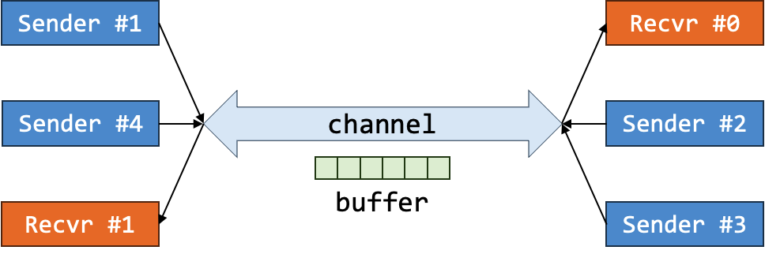
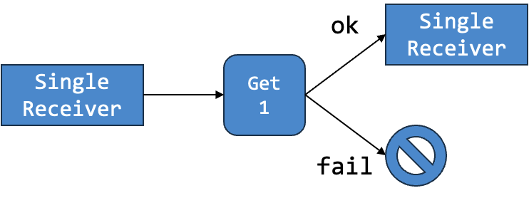

Lab 1: Network and Agents
Basic Information
- Deadline: 5 September 2023, Tuesday, 23:59 SST
- Marks: 20
- Weightage: 2%
Prerequisite
- Completed Lab 0.
- Caught up to Unit 17 of Online Notes.
Files
In the directory, you should see the following files:
- Java Files:
Agent.java: An abstract agent.Buffer.java: A message buffer.Network.java: A network simulation.NetworkAgent.java: A badly written agent for the network simulation.Sender.java: A potential first step.Lab1.java: The main program.
- Input/Output Files:
inputs/Lab1.k.infor the input files.outputs/Lab1.k.outfor the output files.
- Bash Script:
test.sh: TestingLab1by comparing the output when runningLab0oninputs/Lab0.k.inwith the expected output inoutputs/Lab0.k.out.
Background
A network can be simulated by the behavior of sender and receiver. A sender can send message(s) and a receiver can receive message(s). The communications are done via a common channel. Since the channel is common, it has a bandwidth (i.e., the maximum number of messages that can be in the channel at the same time). This can be represented by the buffer.

So as an abstraction, senders write into the buffer if it can (i.e., the buffer is not full) and receiver receive from the buffer if it can (i.e., the buffer is not empty). Note that this is a simplified view as the sender does not send a message to a specific receiver. The receiver also do not expect to receive a message from a specific sender.
The notion of "time" in this simulation is an abstract concept. Time may not run linearly but you are guaranteed that time will order the events. In particular, an agent acting at time \(n\) will act before an agent acting at time \(m\) if and only if \(n < m\). You are also guaranteed that no two agents will act at the same time.
To make it more concrete, consider the following set of events. In this example, our buffer capacity is 4.
| Time | Agent | Event | Buffer #1 | Buffer #2 | Buffer #3 | Buffer #4 |
|---|---|---|---|---|---|---|
| 2 | Receiver #1 | Cannot receive message | - | - | - | - |
| 4 | Sender #1 | Send message "CS" | "CS" | - | - | - |
| 7 | Sender #2 | Send message "2030S" | "CS" | "2030S" | - | - |
| 8 | Receiver #2 | Receive message "CS" | "2030S" | - | - | - |
| 17 | Sender #3 | Send message "is" | "2030S" | "is" | - | - |
| 19 | Sender #4 | Send message "very" | "2030S" | "is" | "very" | - |
| 20 | Sender #5 | Send message "very" | "2030S" | "is" | "very | "very" |
| 21 | Sender #6 | Cannot send message "hard" | "2030S" | "is" | "very | "very" |
| 25 | Receiver #3 | Receive message "2030S" | "is" | "very | "very" | - |
| 99 | Sender #7 | Send message "easy" | "is" | "very | "very" | "easy" |
What you are doing is similar to this, but the behavior of the agents are going to be slightly different. contiIn Lab 1, we provide you with four classes: Agent, Buffer, Network, NetworkAgent.
The Agent Class
Do NOT Edit This Class
The following is for your information only. This restriction may be lifted in future labs.
The Agent class is an abstract class with a single field called actionTime. This field indicates the time in which the agent will take an action (i.e., will have its act(Buffer) method invoked). The Agent::toString() method returns the time as a string enclosed in parentheses and prefixed with @ (e.g., (@2)). The Agent::getTime(int) method returns the time plus some increment. So it is not a pure accessor.
This class has a single abstract method Agent::act(Buffer). The method accepts a buffer which may be mutated by the action. The method may return null or may generate another agent that act at a later time. Since this method is abstract, all subclasses of this class will have to override this method.
You may ignore the superclass Comparable<Agent> for now. It will be made clearer later. What you need to know about that is simply that we need to override the method compareTo(Agent). This method is used by PriorityQueue to determine the ordering of agents.
Class Diagram

The Buffer Class
Do NOT Edit This Class
The following is for your information only. This restriction may be lifted in future labs.
The Buffer class encapsulates a buffer. This is an abstraction of the channel with some capacity. A buffer can be created by specifying the maximum capacity of the buffer.
It has two important methods:
boolean Buffer::send(String)that allows agents to send a non-null message (String) by writing it into the buffer if possible.- The message is stored at the back of the buffer.
- If the message is stored in the buffer, the method returns
true. - Otherwise, the method returns
false.
String Buffer::receive()that allows agents to receive a message (String) from the buffer if possible.- If there is a message, the message will be returned from the front of the buffer.
- If there is no message, a
nullvalue will be returned.
Class Diagram

The Network Class
Edit This Class
Please read carefully about what you need to do.
This class is at the core of the simulation of a network. It has several functionalities.
Initializing the Starting State of the Network
A network is initialized with an ordered sequence of agents to act. The ordering will be based in ascending order of action time of the agent. To initialize the network into some starting state, it will have to read the user input. This is done in the method void Network::init(Scanner).
A Scanner is a class that allows us to read from user input. It will read sequence of characters and potentially translate them into a primitive data type according to the method used. We are only interested in reading until a separator (white space, tabs, or newline) is encountered.
String Scanner::next()reads until white space, tabs, or newline and returns the sequence of characters as a string.int Scanner::nextInt()reads until white space, tabs, or newline and returns the sequence of characters as an integer.
In the explanation below, <type> indicates a token (ends with white space, tabs, or newline) that can be represented as a given type. We may optionally give it a name to be referred to later by <n : type>. We may also write a specific character (e.g., CS2030S) to mean that the input will be exactly that sequence of character.
The expected input format is as follows.
- The first line is
<n : int>wherenis the capacity of the buffer. - The next line is
<m : int>wheremis the number of agents. - The next
mlines is the input for the agents with the following possible format.SS <t : int> <msg : String>SSrepresents a sender that sends a single message.trepresents the action time of this sender.msgrepresents the message to be sent by this sender.
MS <t : int> <k : int> <msg_1 : String> <...> <msg_k : String>MSrepresents a sender that sends multiple messages.trepresents the action time of this sender.krepresents the number of messages.msg_1...msg_krepresents the messages to be sent by this sender.
SR <t : int> <nt : int>SRrepresents a receiver that receives a single message.trepresents the action time of this receiver.ntrepresents the increment of time (to be explained later).
The last m lines of the input will be ordered in ascending order of action time.
Sample Input
1 2 3 4 5 | |
- The buffer has capacity 2 (first line)
- There are 3 agents (second line)
- The first agent is a sender that will send a single message "CS" at time 1 (third line).
- The second agent is a sender that will send two messages "2030" and "S" both at time 3 (fourth line).
- The third agent is a receiver that will receive one message at time 4 and will subsequently try to receive more messages every 5 time units until it fails to receive a message (fifth line).
Running the Network Simulation
The simulation runs by looking at the PriorityQueue. You do not have to worry about the implementation of this. What you need to know is that the method PriorityQueue::poll() will return the next agent to take action according to their action time.
We then perform the action of this agent by invoking agent.act(buffer). This method may return a new agent. If it does, we add this to newly created agent into the queue again. At this point, the queue may reorder its content to ensure that the next agent taken out is really the agent that is supposed to take action.
After each agent performs its task, the current state of the agent is printed using System.out.println(agent). Recap that this will implicitly invoke the toString() method.
Your Task
Currently, the class uses NetworkAgent class. As you will learn later, the NetworkAgent class is badly written. You will need to remove that class.
Your task for this Network class is to replace the use of NetworkAgent class with whatever classes you created to replace NetworkAgent.
The NetworkAgent Class
Delete This Class
Please read carefully about what you need to do.
The NetworkAgent class is very badly written class for agent. It extends the abstract class Agent so that it can be used by PriorityQueue<Agent> but it does not follow the good OOP principles: information hiding, tell, don't ask, LSP, polymorphism, etc.
Class Diagram

Your Task
We separate the agent into two broad class of agents called Sender and Receiver. All initial Sender will have unique sequential id. So the first sender will have id of 0, the second sender will have id of 1, and so on. Similarly, all initial Receiver will have unique sequential id. So if we have a sequence of: sender, receiver, sender. Their id will be: sender[0], receiver[0], sender[1].
Note that the sequential id are only for the initial sender/receiver. In particular, our current receiver produces another receiver with the same id but acting at a later time.
The current implementation of NetworkAgent is a mix of three different agents:
Single Sender Agent
The action of this agent is to send a single message into the buffer if possible. If the action fails (e.g., the buffer is full), then this sender does not perform anything. The action of this sender does not generate additional agent.
When printed, this agent remembers if it successfully send a message or not and prints accordingly.
Multi Sender Agent
The action of this agent is to send multiple messages into the buffer if possible. As soon as the action fails (e.g., it fails to send the second message out of four messages), the agent will stop trying to send. The action of this sender does not generate additional agent.
When printed, this agent remembers how many messages it successfully sent and prints accordingly.
Single Receiver Agent
The action of this agent is to try to receive a single message from the buffer if possible. If it receives a message, this receiver will generate a (potentially the same) receiver with the same id to act at another time. The time is computed from the input t and nt of SR. On the other hand, if it fails to receive a message (e.g., the buffer is empty), the agent will not generate additional agent.
When printed, this agent remembers if it successfully received a message or not and prints accordingly.
Single Receiver Example
Consider part of the input:
1 | |
This creates a single receiver that is first activated at time 4. Assume its id is 0 and we will denote this as (@4) Receiver[0]. So at time 4, this receiver may receive a message "CS2030S". Once the message is received, a receiver with the same id will be returned by the action that will be activated at time 9 (i.e., 4 + 5). In other words, this will be (@9) Receiver[0]. If this receiver then failed to receive a message, we may see the following output.
1 2 3 4 5 | |

Task 1: OOP
The NetworkAgent class is badly written. Your main task is to rewrite this using OOP principles: abstraction, encapsulation, information hiding, tell, don't ask, composition, inheritance, polymorphism, LSP, abstract class, _etc.
A brief overview:
- Group relevant fields and methods into new classes for encapsulation.
- Model "has a" relationship with composition.
- Model "is a" relationship with inheritance.
- Hide internal details for information hiding.
- Avoid accessor and mutators when possible and use tell, don't ask instead.
- Use polymorphism to make code more succinct and extendable in the future while adhering to LSP.
Here are some hints:
- Think about the problem that you are solving: what are the nouns? These are good candidates for new classes.
- For each class, what are the attributes/properties relevant to the class? These are good candidates for fields in the class.
- Do the classes relate to each other via IS-A or HAS-A relationship?
- For each class, what are their responsibilities? What can they do? These are good candidates for methods in the class.
- How do the objects of each class interact? These are good candidates for public methods.
- What are some behavior that changes depending on the specific type of objects?
Note that the goal of this lab and, and of CS2030S in general, is NOT to solve the problem with the cleverest and the shortest piece of code possible. For instance, you might notice that you can solve Lab 1 with only a few variables and an array. But such a solution is hard to extend and modify. In CS2030S, our goal is to produce software that can easily evolve and be modified, with a reduced risk of introducing bugs while doing so.
Note that Lab 1 is the first of a series of labs, where we introduce new requirements or modify existing ones in every lab (not unlike what software engineers face in the real world). We will modify the behavior for the agents and buffer. In particular, in the future,
- a different receiver may be added that tries to receive multiple messages with one of the following possible behavior.
- Receive one at a time (i.e., receive one now and act at a later time to receive again until a specified number of messages have been received).
- Receive all at the same time.
- a different sender may be added that retries sending messages as long as it failed to send messages until it is successful with the following possible behavior.
- It may retry at a constant time.
- It may retry with longer time for each failure (exponential backoff).
- a different buffer may be needed with the following behavior.
- A priority buffer may be added with priority sender and/or receiver.
- A buffer with maximum capacity that depends on the number of characters in the channel instead of number of messages.
Note that not all of the above changes may be executed. A mixture of those or similar changes may be executed instead. Thus, making sure that your code will be able to adapt to the new problem statements is the key. Trying to solve the lab without considering this and you will likely find yourself painted into a corner and have to re-write much of your solution to handle any new requirements.
Termination
You are guaranteed that the input will produce a simulation that will terminate if implemented correctly. However, it is not guaranteed that the buffer will be empty at the end!
Since an incorrect implementation has a potential to have an infinite loop, if your code does not terminate, you may force it to stop by pressing Ctrl + C.
First Step
To help you in your design, we will show a potential first step. This may not be the step that you choose in the end but it can be a candidate. This step is taken based on the following specification:
We separate the agent into two broad class of agents called Sender and Receiver. All initial Sender will have unique sequential id. So the first sender will have id of 0, the second sender will have id of 1, and so on. Similarly, all initial Receiver will have unique sequential id. So if we have a sequence of: sender, receiver, sender. Their id will be: sender[0], receiver[0], sender[1].
This brings us to the creation of an abstract class Sender with a specific responsibilities of ensuring that in the normal case, the id of all sender will be sequential starting from 0. You will see this class in the file Sender.java.

From here, you may decide to continue this path by adding the other necessary classes or you may reject this design and come up with your own design.
Workflow
Compilation
To compile your code,
1 | |
Warning
You may want to make sure at least once before submission that you can compile from scratch by first removing all .class files.
Running and Testing
You should not test your code manually by entering the inputs. Instead, enter the inputs into a file, and run
1 | |
A set of test inputs is provided as part of the skeleton, named Lab1.x.in under the inputs directory. You can run them with, for instance,
1 | |
You can save the output by redirecting it into a file (e.g., a file called OUT).
1 | |
You can then look for the difference using the diff command.
1 | |
Alternatively, you can automatically test your code against all the given inputs/outputs by running.
1 | |
or, you may need to specify the use of bash to run the .sh file.
1 | |
Debugging
The expected outputs are given in the outputs directory. You can compare OUT with the expected output with diff or vim. Using vim,
1 | |
will open both files and highlight the differences.
As the output becomes too long, you can focus on tracing a particular agent with the help of grep. Suppose you want to focus on what happened to Receiver #0 in OUT, run
1 2 3 4 5 6 | |
Grading
This lab is worth 20 marks and contribute 2% to your Lab Assignment component. The marking scheme is as follows:
| Component | Sub-Component | Marks |
|---|---|---|
| Correctness | 4 marks | |
| OO Principles | 16 marks | |
| Encapsulation Information Hiding Polymorphism Tell, Don't Ask LSP |
2 marks 2 marks 4 marks 4 marks 4 marks |
Correctness mark will only be awarded if your code compiles and there are sufficient encapsulation (i.e., you have created classes and used them). Note that the original code will have passed all test cases. Additionally, if your code cannot compile for any reason, you will only get 75% of the mark for OO principles. This penalty will be increased in subsequent labs.
We may make additional deductions for other issues or errors in your code such as run-time error, failure to follow instructions, etc.
Submission
To submit the lab, run the following command from the directory containing your lab 1 code.
1 | |
Please check your repo after running the submission script to ensure that your files have been added correctly. The URL to your repo is given after you run the submission script.
Do NOT Use Other Git Command
While you may be familiar with git commands, please do not use them. Please use only the submission script submit-labX to ensure that your submissions are recorded properly.